RPG Maker Day & Night Cycle: Pro Club Edition Tutorial
The next level of the Day & Night system: world-map time, a picture-based HUD, AM/PM display, smart performance optimizations, pause-time, and time-reactive events. 🌙✨
All RPG Maker EnginesAdvanced Tutorial~75 min

🔒 Club members only, free to join! These Pro tutorials are exclusive to the Anya & Lolo Club. Joining costs nothing, join the Club for free and the access links land straight in your inbox 💌 (Already a member? Thanks for being here!) This guide assumes you've finished the Lite Day & Night tutorial.
What you'll build
We'll take the Lite system to the next level so your world truly reacts to time:
1
World-map time cycles
Run the clock across every map by moving the time engine into Common Events.
2
A picture-based custom HUD
A polished image clock with a 24-hour readout, AM/PM mode, and a day counter.
3
Smart performance systems
Update tints and displays only when the value actually changes, so parallel events stop draining resources.
4
Pause-time & time-specific encounters
Freeze the clock during cutscenes, and make events appear at certain times (like fireflies at night).
Part 1. World-map time cycles
To run the time system on every map, move the
Game Time (Main) event into Common Events. ~5-min setup1
Move it to Common Events
Open
Tools → Database → Common Events and recreate (or paste) the Game Time logic there. Set the Trigger to Parallel and give it a Switch set to ON at Game Start.2
Leave Pre-Set Time where it is
The Pre-Set Time (Autorun) event can stay on the map. Now whenever you teleport the player to a new map, time keeps ticking. Simple as that!
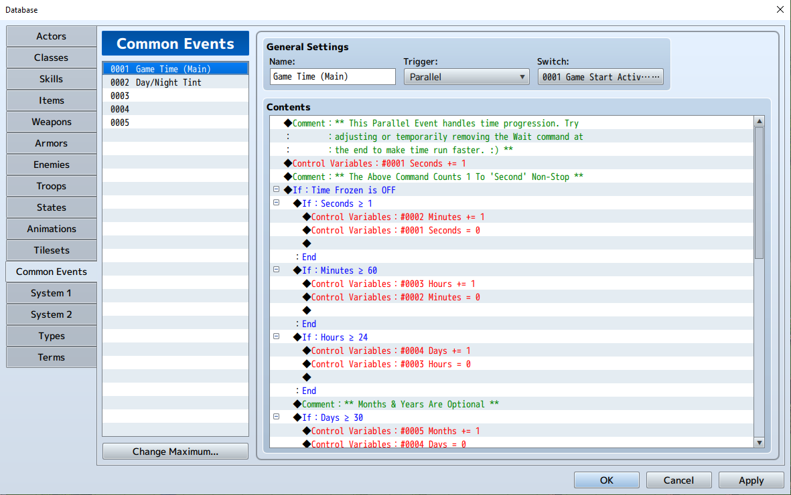
Part 2. Picture-based custom HUD
Let's make the time display look amazing with images instead of plain text. ~30-min setup
1
Create a "Time Display" parallel event
In the Common Events tab, add a new Parallel event named "Time Display". This will draw the HUD pictures.
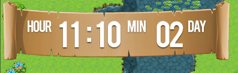
Assign your picture numbers
The demo's Pictures folder includes interface, separators, and number sets. Give each a unique number:
1 = interface.png • 2 = separators • 3 = minute numbers • 4 = hour numbers • 5 = "hour" label • 6 = "minutes" label • 7 = day numbers • 8 = "days" label.
1 = interface.png • 2 = separators • 3 = minute numbers • 4 = hour numbers • 5 = "hour" label • 6 = "minutes" label • 7 = day numbers • 8 = "days" label.
Important: every Show Picture must use a unique number. If two images share a number, they overwrite each other!
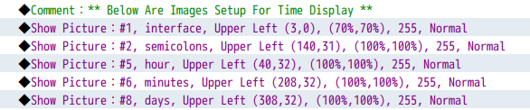
2
Draw the interface, then the numbers
Start with pictures 1, 2, 5, 6 and 8 for the base interface (number 1 stays underneath). Then add 3, 4 and 7 for the changing numbers, the default X/Y positions are fine for now.
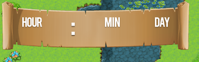
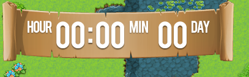
3
Swap the numbers with conditional branches
To make "00" become "01", "02"… use Conditional Branches:
If Hours = 0 → show 00.png, If Hours = 1 → show 01.png, and so on. Create 24 branches for the hours (duplicate a branch and change the image + constant to go faster). For minutes, you only need 10/20/30/40/50 images, Stardew-style.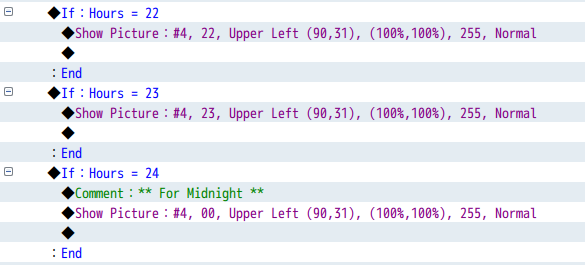
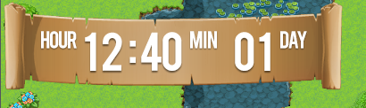
Pro tip: temporarily remove the 60-frame Wait from Game Time (Main) so the numbers update fast while you test, no waiting around.
4
Add the day counter
Repeat the same idea for Days with 30 conditional branches. Now you have a full clock and calendar on screen!
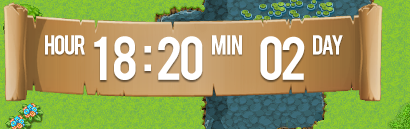
Part 3. Convert to AM/PM format
Military time feels formal, here's how to switch to a friendly AM/PM clock. ~15-min setup
1
Show AM or PM
Drop
am.png and pm.png into Pictures. Add two Conditional Branches: If Hours < 12 shows AM, If Hours ≥ 12 shows PM. Use the same picture number for both (only one shows at a time) at X 50, Y 57.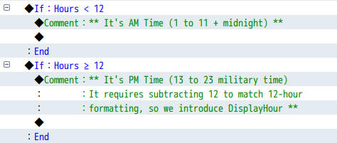
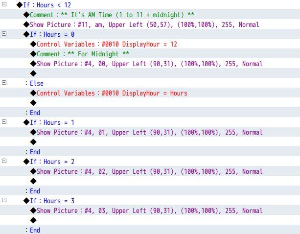
2
Convert 13-23 into 1-11 PM (cleaner method)
Create a helper variable
DisplayHour. Set it to the Hours value, then: If DisplayHour ≥ 13 → subtract 12. Now change your PM branch conditions to use DisplayHour (e.g. If DisplayHour = 1) and rename the images to match (13.png → 1.png).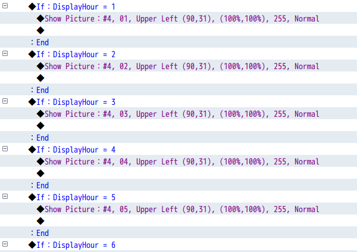
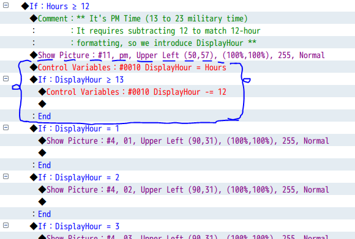
Part 4. Make the system smarter
Parallel events check their conditions many times per second. Let's only update things when the value actually changes. ~15-min setup
Good to know: RPG Maker MV is a little more sensitive to parallel lag than MZ, so these optimizations matter most in MV.
1
Smart screen tint
Create
Last TintTime. Wrap your tint updates in If Hours ≠ Last TintTime, then at the end set Last TintTime = Hours. The tint now reapplies only when the hour changes, no more flicker or wasted frames.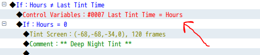
2
Smart hour tracking
Create
Last HourTime. Check If Hours ≠ Last HourTime before updating the 24 hour branches, then set Last HourTime = Hours. The HUD only redraws when the hour actually changes.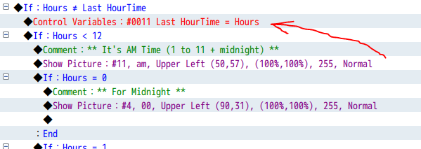
3
Smart day (and optional minute) tracking
Do the same with
Last DayTime for the 30 day branches, splitting them helps too. You can optionally add Last MinuteTime for the 10-minute intervals, though with only 6 branches it's not essential.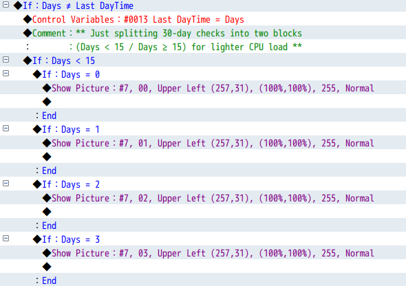
Part 5. Pause time during cutscenes
Freeze the clock during dialogue or cutscenes. ~5-min setup
1
Create a "Time Frozen" switch
Make a switch called
Time Frozen. Turn it ON before a Show Text and OFF after. While it's ON, your time system won't update minutes, hours or tints. Gate the time logic with If Time Frozen is OFF.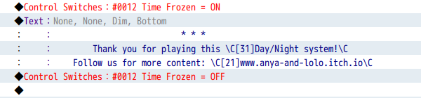
Part 6. Time-specific encounters
Use switches to make events appear at certain times. ~5-min setup
1
Fireflies that only appear at night
In Game Time (Main), flip a switch ON during the night hours (and OFF otherwise). Put your firefly event on a page conditioned by that switch. Use the same idea for windows that open by day, lanterns that light at night, or shops that run 9AM-6PM.
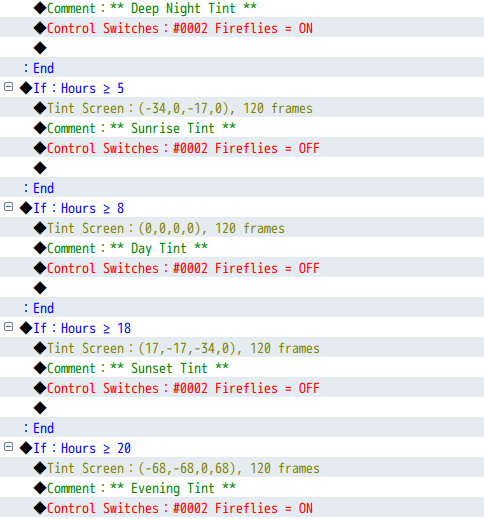
🌟 The possibilities are endless, your world now feels alive with a smart, reactive day-night system!
💖 You might also enjoy
More systems to expand your RPG Maker world:
The Relationship System for dynamic character bonds, and the Fishing Mini-Game for a relaxing catch-and-reward loop. Got a request or a cool idea? Let me know!